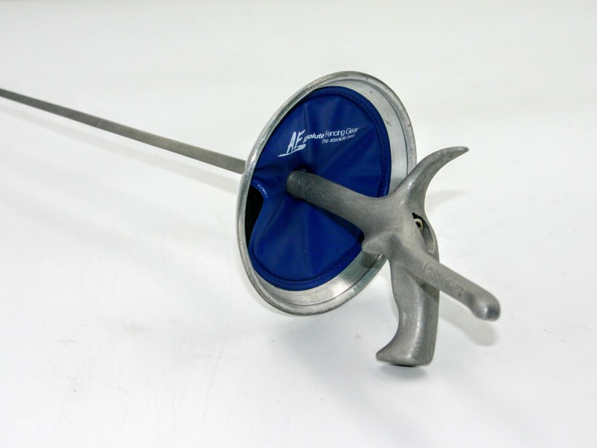
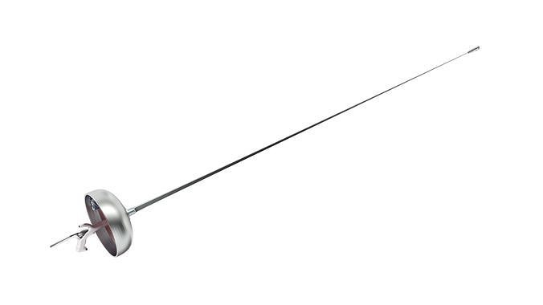

Welcome to my website describing one of my geniuses and passions, fencing!
Welcome to the gallery page! Check out the below images on the differences between the weapons used in foil, epee, and saber, and more!
This is a foil practice blade. Typically, there is a wire running through the blade to be able to detect when the point is depressed. This handle is called a pistol grip.
This is an epee blade. As you can see, the pommel is much larger and rounder, and the blade is also thicker.
This is a saber blade. Here you can see where the body cord (wire) would be plugged in. This pommel also comes around to cover the bottom of your hand.

This is a chart of the parries in fencing, parry 1 through parry 9. Each one is used to cover a different part of the target, but parries 4, 6, 7, and 8 are most common.

Recently, I had the chance to meet foil Olympian Alexander Massialas at my local club, RCFC. In this photo, I'm wearing his medal from Rio.